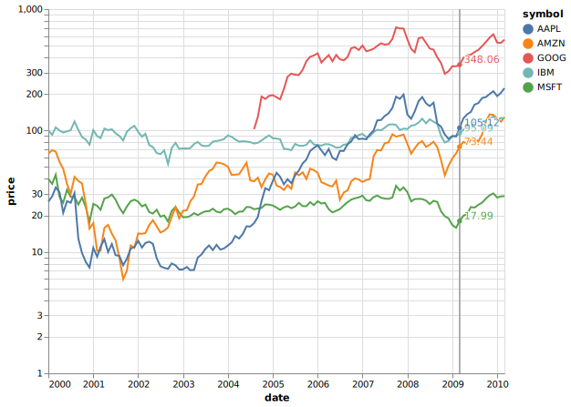

Fastpages es una plataforma que te permite crear y alojar un blog con Jupyter Notebooks.
python
jupyter-notebooks
Autor/a
Francisco Alfaro
Fecha de publicación
20 de agosto de 2021
Fastpages
Introducción
Fastpages es una plataforma que te permite crear y alojar un blog de forma gratuita, sin anuncios y con muchas funciones útiles, como:
Cree publicaciones que contengan código, salidas de código (que pueden ser interactivas), texto formateado, etc. directamente desde Jupyter Notebooks. Las publicaciones en notebooks admiten funciones como:
Las visualizaciones interactivas realizadas con Altair siguen siendo interactivas.
Ocultar o mostrar la entrada y salida de la celda.
Celdas de código contraíbles que están abiertas o cerradas de forma predeterminada.
Defina el título, el resumen y otros metadatos a través de celdas de rebajas especiales
Posibilidad de agregar enlaces a Colab y GitHub automáticamente.
Cree publicaciones, incluido el formato y las imágenes, directamente desde documentos de Microsoft Word.
Cree y edite publicaciones de Markdown completamente en línea usando el editor de Markdown incorporado de GitHub.
Inserta tarjetas de Twitter y videos de YouTube.
Categorización de publicaciones de blog por etiquetas proporcionadas por el usuario para mayor visibilidad.
En esta sección se enseñará los pasos básicos para poder crear su propio blog con fastpages.
Primeros pasos
Configurando Fastpages
¡El proceso de configuración de páginas rápidas también está automatizado con GitHub Actions! Al crear un repositorio a partir de la plantilla de páginas rápidas, se abrirá automáticamente una solicitud de extracción (después de ~ 30 segundos) configurando su blog para que pueda comenzar a funcionar. La solicitud de extracción automatizada lo recibirá con instrucciones como esta:
¡Todo lo que tienes que hacer es seguir estas instrucciones (en el PR que recibes) y tu nuevo sitio de blogs estará en funcionamiento!
Note: Si tienes dudas con la instalación, te recomiendo ver el siguiente video.
Estructura de Fastpages
El repositorio de fastpages esta compuesto de la siguiente forma:
De momento nos vamos a centrar en algunos de estos archivos:
_config.yml: es el archivo que funciona como el motor del proyecto. En ente archivo, podemos poner el nombre a nuestro blog, el logo, información personal (github, linkedin, etc), entre otras cosas.
index.html: Corresponde a la primera página cuando se despliega nuestro blog. por lo que es importante escribir algún mensaje para especificar la motivación de hacer un blog.
/_notebooks: Lugar donde se deben guardar los notebooks (.ipynb) con la convención de nomenclatura **YYYY-MM-DD-*.ipynb**.
/_posts: Lugar donde se deben guardar los archivos markdown (.md) con la convención de nomenclatura **YYYY-MM-DD-*.md**.
/_word: Lugar donde se deben guardar los archivos word (.docx) con la convención de nomenclatura **YYYY-MM-DD-*.docx**.
Note: fastpages usa nbdev para impulsar el proceso de conversión de Jupyter Notebooks en publicaciones de blog. Cuando guardas un notebook en la carpeta /_notebooks de tu repositorio, GitHub Actions aplica nbdev a esos notebooks automáticamente. El mismo proceso ocurre cuando guarda documentos de Word o markdown en el directorio _word o_posts, respectivamente.
Jupyter Notebooks y Fastpages
En esta parte, se muestran características especiales que fastpages proporciona para los notebooks. También puede escribir las publicaciones de su blog con documentos de Word o makdown.
Opciones a través de FrontMatter
La primera celda de su Jupyter Notebook o markdown contiene información preliminar. El tema principal son los metadatos que pueden activar/desactivar opciones en su Notebook. Tiene el formato siguiente:
# Title
> Awesome summary
- toc: true
- branch: master
- badges: true
- comments: true
- author: Hamel Husain & Jeremy Howard
- categories: [fastpages, jupyter]
Todas las configuraciones anteriores están habilitadas en esta publicación, ¡para que pueda ver cómo se ven!
El campo de resumen (precedido por >) se mostrará debajo de su título y también lo utilizarán las redes sociales para mostrar la descripción de su página.
toc: establecer esto en true generará automáticamente una tabla de contenido
badges: establecer esto en true mostrará los enlaces de Google Colab y GitHub en la publicación de su blog.
comments: establecer esto en true habilitará los comentarios. Consulte estas instrucciones para obtener más detalles.
autor: esto mostrará los nombres de los autores.
categories: permitirá que su publicación sea categorizada en una página de “Etiquetas”, donde los lectores pueden navegar por su publicación por categorías.
Markdown Front Matters tiene un formato similar al de los notebooks. Las diferencias entre los dos se puede ver en el siguiente link.
Code Folding
coloque una marca # collapse-hide en la parte superior de cualquier celda si desea ocultar esa celda de forma predeterminada, pero déle al lector la opción de mostrarla:
#hide!pip install pandas altair
Requirement already satisfied: pandas in /home/fralfaro/.cache/pypoetry/virtualenvs/rise-example-Z8sxMVFk-py3.8/lib/python3.8/site-packages (1.3.1)
Requirement already satisfied: altair in /home/fralfaro/.cache/pypoetry/virtualenvs/rise-example-Z8sxMVFk-py3.8/lib/python3.8/site-packages (4.1.0)
Requirement already satisfied: pytz>=2017.3 in /home/fralfaro/.cache/pypoetry/virtualenvs/rise-example-Z8sxMVFk-py3.8/lib/python3.8/site-packages (from pandas) (2021.1)
Requirement already satisfied: numpy>=1.17.3 in /home/fralfaro/.cache/pypoetry/virtualenvs/rise-example-Z8sxMVFk-py3.8/lib/python3.8/site-packages (from pandas) (1.21.1)
Requirement already satisfied: python-dateutil>=2.7.3 in /home/fralfaro/.cache/pypoetry/virtualenvs/rise-example-Z8sxMVFk-py3.8/lib/python3.8/site-packages (from pandas) (2.8.2)
Requirement already satisfied: six>=1.5 in /home/fralfaro/.cache/pypoetry/virtualenvs/rise-example-Z8sxMVFk-py3.8/lib/python3.8/site-packages (from python-dateutil>=2.7.3->pandas) (1.16.0)
Requirement already satisfied: jinja2 in /home/fralfaro/.cache/pypoetry/virtualenvs/rise-example-Z8sxMVFk-py3.8/lib/python3.8/site-packages (from altair) (3.0.1)
Requirement already satisfied: toolz in /home/fralfaro/.cache/pypoetry/virtualenvs/rise-example-Z8sxMVFk-py3.8/lib/python3.8/site-packages (from altair) (0.11.1)
Requirement already satisfied: entrypoints in /home/fralfaro/.cache/pypoetry/virtualenvs/rise-example-Z8sxMVFk-py3.8/lib/python3.8/site-packages (from altair) (0.3)
Requirement already satisfied: jsonschema in /home/fralfaro/.cache/pypoetry/virtualenvs/rise-example-Z8sxMVFk-py3.8/lib/python3.8/site-packages (from altair) (3.2.0)
Requirement already satisfied: MarkupSafe>=2.0 in /home/fralfaro/.cache/pypoetry/virtualenvs/rise-example-Z8sxMVFk-py3.8/lib/python3.8/site-packages (from jinja2->altair) (2.0.1)
Requirement already satisfied: attrs>=17.4.0 in /home/fralfaro/.cache/pypoetry/virtualenvs/rise-example-Z8sxMVFk-py3.8/lib/python3.8/site-packages (from jsonschema->altair) (21.2.0)
Requirement already satisfied: setuptools in /home/fralfaro/.cache/pypoetry/virtualenvs/rise-example-Z8sxMVFk-py3.8/lib/python3.8/site-packages (from jsonschema->altair) (57.1.0)
Requirement already satisfied: pyrsistent>=0.14.0 in /home/fralfaro/.cache/pypoetry/virtualenvs/rise-example-Z8sxMVFk-py3.8/lib/python3.8/site-packages (from jsonschema->altair) (0.18.0)
WARNING: You are using pip version 21.1.3; however, version 21.2.2 is available.
You should consider upgrading via the '/home/fralfaro/.cache/pypoetry/virtualenvs/rise-example-Z8sxMVFk-py3.8/bin/python -m pip install --upgrade pip' command.
#collapse-hideimport pandas as pdimport altair as alt
coloque una marca # collapse-show en la parte superior de cualquier celda si desea mostrar esa celda de forma predeterminada, pero déle al lector la opción de ocultarla:
# hidedf = pd.read_json(movies) # load movies datadf.columns = [x.replace(' ', '_') for x in df.columns.values]genres = df['Major_Genre'].unique() # get unique field valuesgenres =list(filter(lambda d: d isnotNone, genres)) # filter out None valuesgenres.sort() # sort alphabetically
Tablas de datos
Puede mostrar tablas de la forma habitual en su blog:
# display table with pandasdf[['Title', 'Worldwide_Gross', 'Production_Budget', 'IMDB_Rating']].head()
Title
Worldwide_Gross
Production_Budget
IMDB_Rating
0
The Land Girls
146083.0
8000000.0
6.1
1
First Love, Last Rites
10876.0
300000.0
6.9
2
I Married a Strange Person
203134.0
250000.0
6.8
3
Let's Talk About Sex
373615.0
300000.0
NaN
4
Slam
1087521.0
1000000.0
3.4
Gráficos interactivos con Altair
¡Las visualizaciones interactivas realizadas con Altair siguen siendo interactivas!
Dejamos esta celda de abajo sin ocultar para que pueda disfrutar de una vista previa del resaltado de sintaxis en páginas rápidas, que utiliza el tema de drácula.
#collapse-hide# select a point for which to provide details-on-demandlabel = alt.selection_single( encodings=['x'], # limit selection to x-axis value on='mouseover', # select on mouseover events nearest=True, # select data point nearest the cursor empty='none'# empty selection includes no data points)# define our base line chart of stock pricesbase = alt.Chart().mark_line().encode( alt.X('date:T'), alt.Y('price:Q', scale=alt.Scale(type='log')), alt.Color('symbol:N'))alt.layer( base, # base line chart# add a rule mark to serve as a guide line alt.Chart().mark_rule(color='#aaa').encode( x='date:T' ).transform_filter(label),# add circle marks for selected time points, hide unselected points base.mark_circle().encode( opacity=alt.condition(label, alt.value(1), alt.value(0)) ).add_selection(label),# add white stroked text to provide a legible background for labels base.mark_text(align='left', dx=5, dy=-5, stroke='white', strokeWidth=2).encode( text='price:Q' ).transform_filter(label),# add text labels for stock prices base.mark_text(align='left', dx=5, dy=-5).encode( text='price:Q' ).transform_filter(label), data=stocks).properties( width=500, height=400)

Otras características
Al escribir Le doy a esta publicación dos :+1:! Se mostrará esto:
Le doy a esta publicación dos :+1:!
Imágenes con leyenda
Puede incluir imágenes de rebajas con leyenda (caption) como este:
![](https://img.shields.io/static/v1?label=fastpages&message=link&color=57aeac&labelColor=black&style=flat&logo=.png)